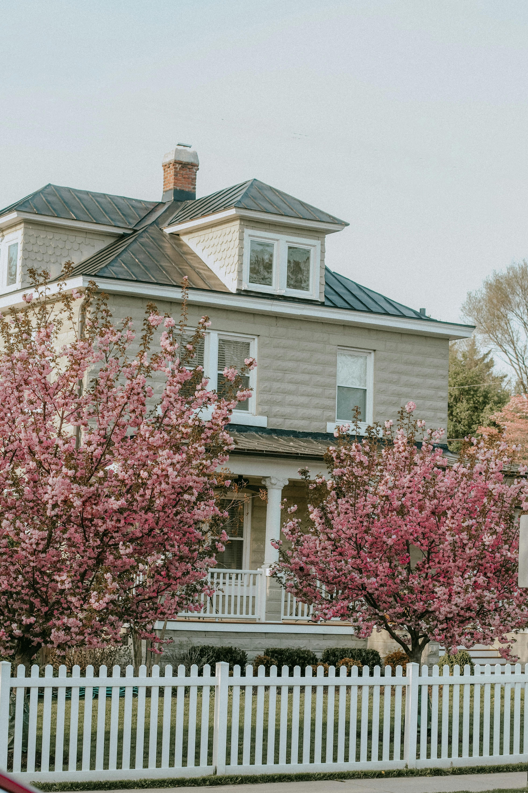
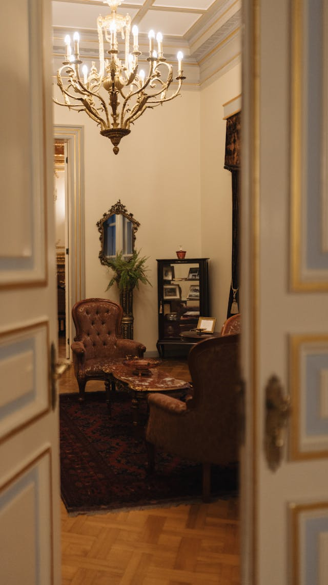

Events & Programs

The Blue Springs Historical Society hosts a variety of events throughout the year that celebrate local history and bring the community together. Our programs are designed for all ages and offer opportunities to learn, explore, and connect with the past.
Events
Our annual events highlight the traditions and stories that make Blue Springs unique. These include seasonal tours, holiday programs, and community gatherings. Each event is carefully planned to provide an engaging and educational experience.
Museum Tours
Guided tours of the Dillingham‑Lewis House Museum are available throughout the year. Visitors can explore furnished rooms, view rotating exhibits, and learn about the families who once lived in the home. Tours are led by knowledgeable volunteers who share stories and historical insights.

Educational Programs
We partner with local schools, homeschool groups, and community organizations to offer educational programs tailored to different age groups. These programs include hands‑on activities, historical demonstrations, and interactive lessons that bring history to life.
Special Exhibits
Throughout the year, we curate special exhibits that focus on specific themes, time periods, or local stories. These exhibits allow us to showcase artifacts from our collection and highlight lesser known aspects of Blue Springs history.
Community Workshops
We host workshops on topics such as genealogy, preservation techniques, and local research methods. These workshops provide valuable skills and encourage residents to explore their own family histories.
How to Participate
Most events are open to the public, and many are free or low cost. Members receive early access and exclusive invitations to select programs. We encourage residents to check our calendar regularly for updates.